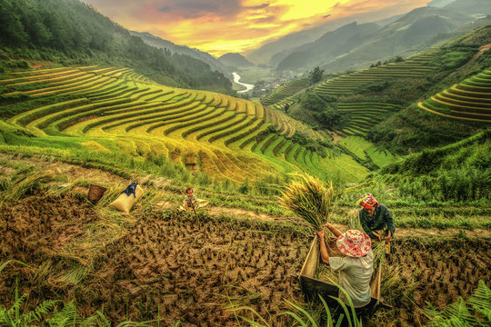
Banaue Rice Terraces
Step into 2,000 years of living history. The Eighth Wonder of the World awaits.
Explore Guide →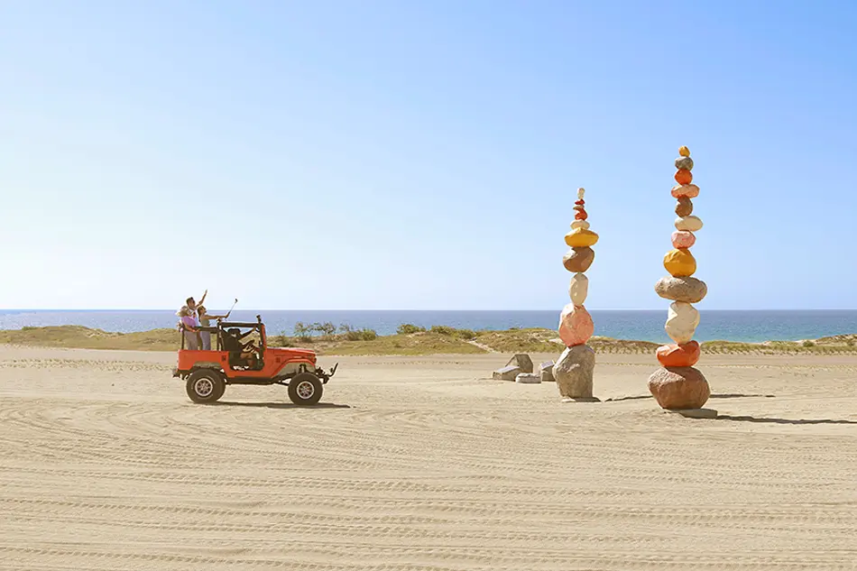
Paoay Sand Dunes
Race across 85+ hectares of golden dunes, sandboard down steep slopes, and explore a UNESCO World Heritage church — all in one trip.
Explore Guide →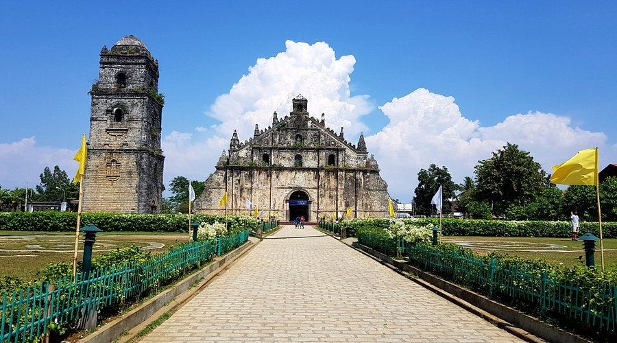
Paoay Church
A UNESCO World Heritage masterpiece built in 1694. Earthquake Baroque architecture, 24 massive coral-stone buttresses, and 330 years of living history.
Explore Guide →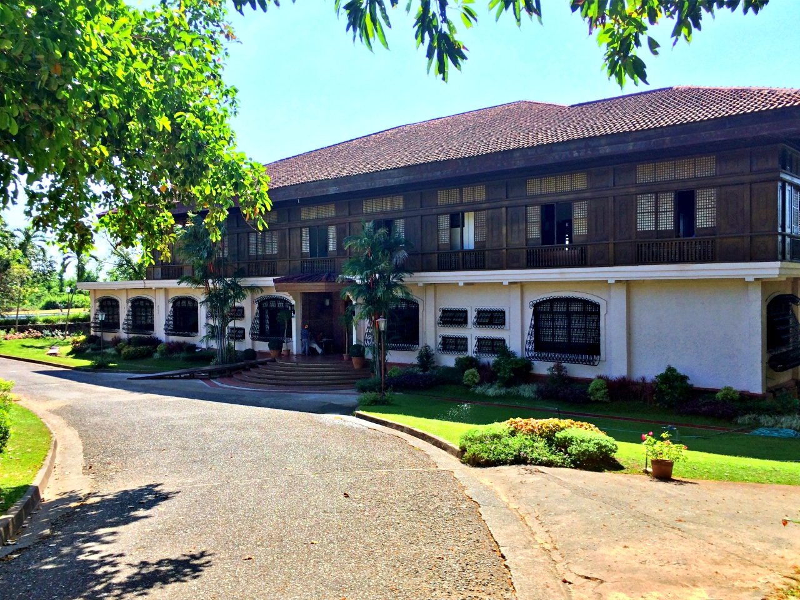
Malacañang of the North
The former presidential residence of Ferdinand Marcos. A lakeside mansion turned museum with vintage cars, state rooms, and decades of political history.
Explore Guide →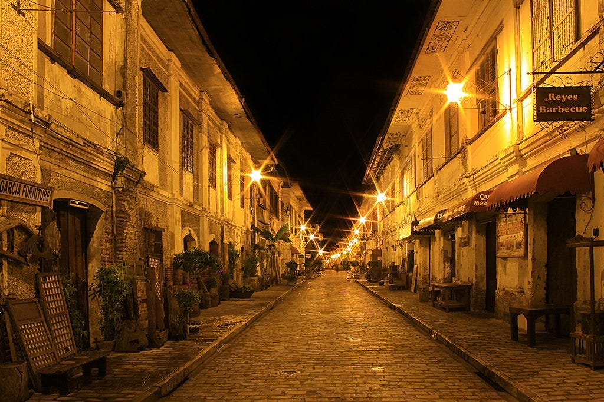
Vigan Heritage City
Asia's best-preserved Spanish colonial city. Cobblestone streets, ancestral houses, horse-drawn kalesa, and 500 years of living history — a UNESCO World Heritage City.
Explore Guide →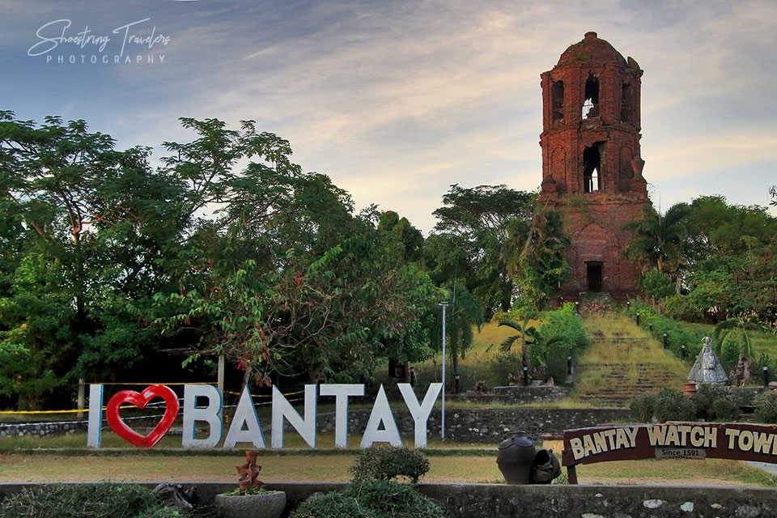
Bantay Bell Tower
A 400-year-old colonial watchtower built in 1591. Climb to the top for a 360° panoramic view of Vigan and the Abra River — one of the best views in Ilocos Sur.
Explore Guide →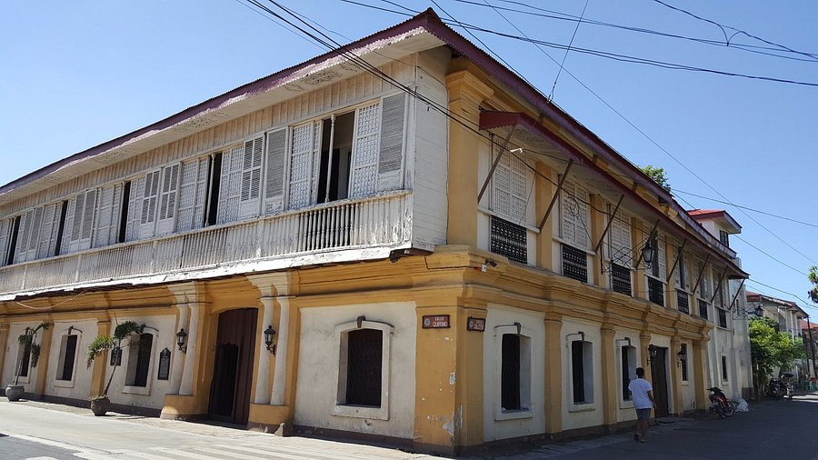
Syquia Mansion
The ancestral home of President Elpidio Quirino, built in the 1830s. A beautifully preserved Ilocano-Chinese Mestizo house turned museum in the heart of Vigan's heritage zone.
Explore Guide →
San Juan Surfing Area
The surf capital of northern Luzon. Consistent waves, beginner-friendly surf schools, beachfront cafes, and legendary sunsets — just 5 hours from Manila.
Explore Guide →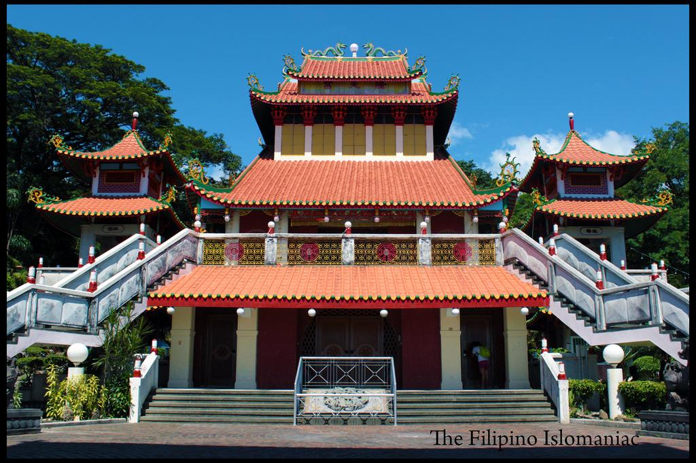
Ma-Cho Temple
A vibrant Chinese Taoist temple perched on a hillside above the South China Sea. A 7-story pagoda, ornate dragon sculptures, and panoramic coastal views.
Explore Guide →
Poro Point Lighthouse
A Spanish-era lighthouse built in 1892, standing guard over the South China Sea for 130+ years. Dramatic rocky coastline and sweeping 360° sea views.
Explore Guide →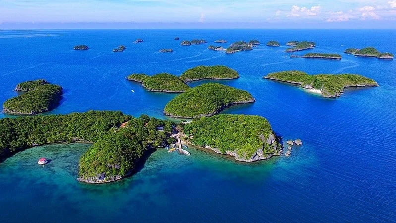
Hundred Islands National Park
124 coral and limestone islands rising from the Lingayen Gulf. Island hopping, snorkeling, cliff jumping, and hidden lagoons — one of the Philippines' oldest national parks.
Explore Guide →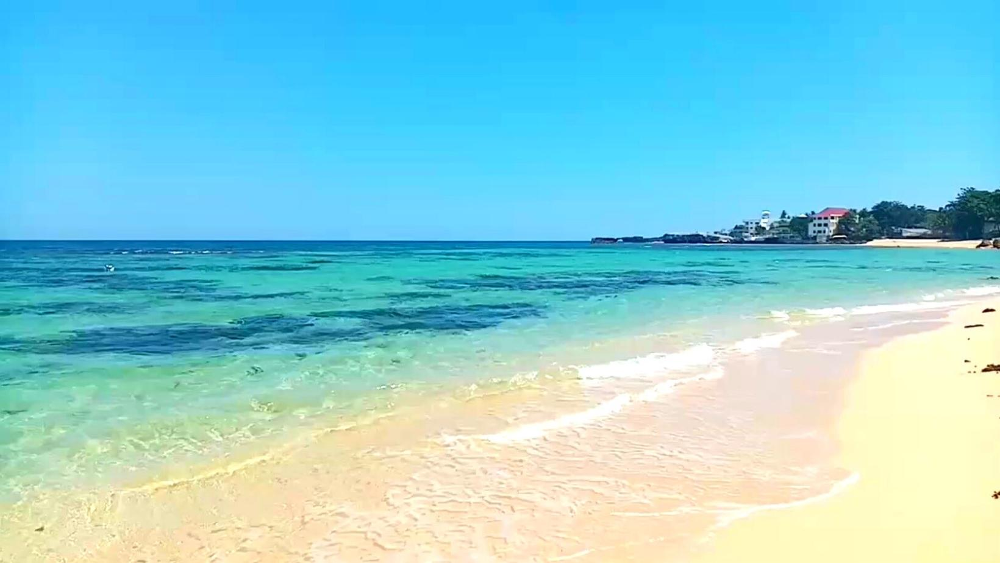
Bolinao Patar Beach
Wild, windswept coastline with dramatic ancient rock formations, tide pools, and spectacular sunsets over the South China Sea. Pangasinan's most dramatic beach.
Explore Guide →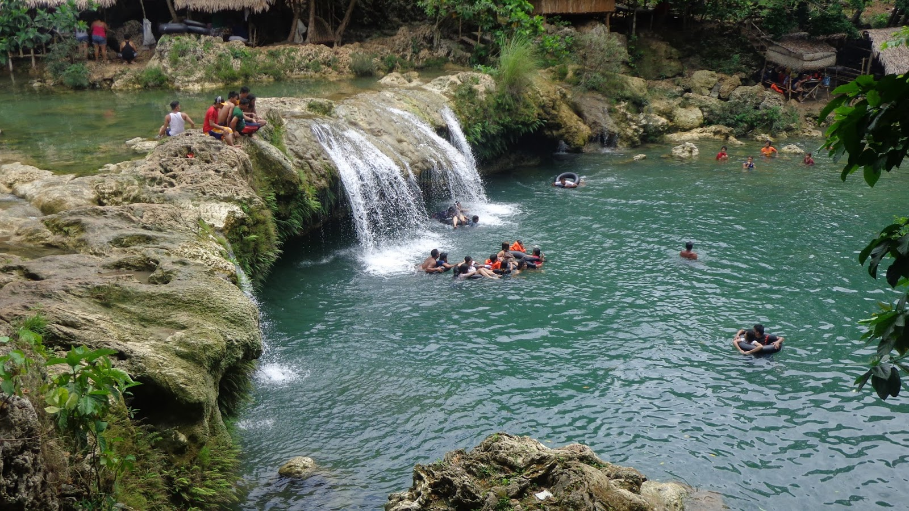
Bolinao Falls
Three tiered waterfalls hidden in the lush jungle of Bolinao — crystal-clear natural pools, cascading white water, and a cool jungle escape from the Pangasinan coast.
Explore Guide →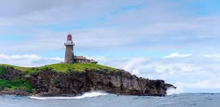
Basco Lighthouse
A Spanish colonial lighthouse on Naidi Hills above Basco — the northernmost province of the Philippines. Sweeping 360° views of the Pacific Ocean and the rolling green hills of Batan Island.
Explore Guide →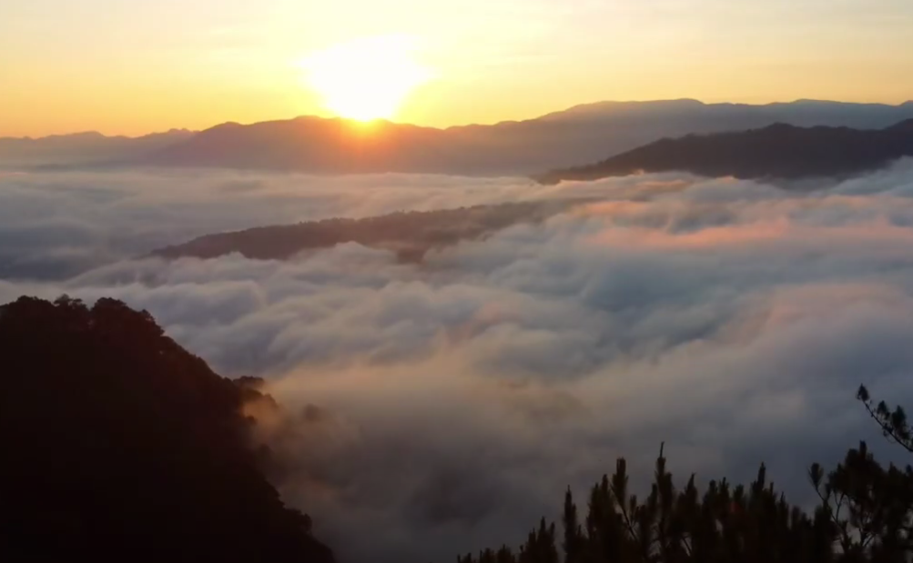
Marlboro Hills (Rakuh-a-Idi)
Sweeping rolling green hills where wild horses roam freely above the Pacific Ocean. One of the most cinematic and emotionally powerful landscapes in the entire Philippines.
Explore Guide →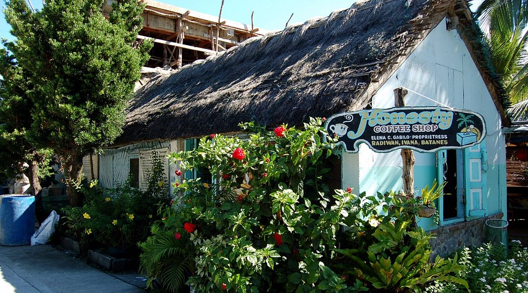
Honesty Coffee Shop
An unmanned store in Ivana where visitors pay on the honor system since 1999. No cashier, no CCTV — just trust. One of the most unique and moving cultural experiences in Southeast Asia.
Explore Guide →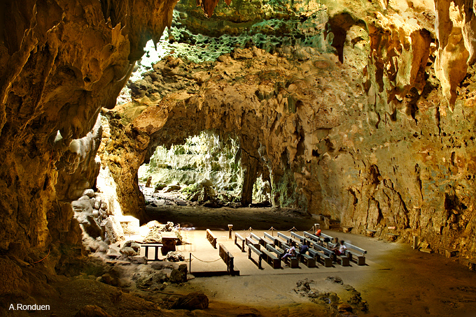
Callao Cave
Seven dramatic limestone chambers with a natural skylight illuminating an active chapel inside. One of the most spectacular cave systems in the Philippines, on the UNESCO Tentative List.
Explore Guide →
Palaui Island
A pristine 3,500-hectare protected wildlife sanctuary at the northeastern tip of Luzon. Jungle treks to a 19th-century lighthouse, untouched beaches, and crystal-clear coral reefs.
Explore Guide →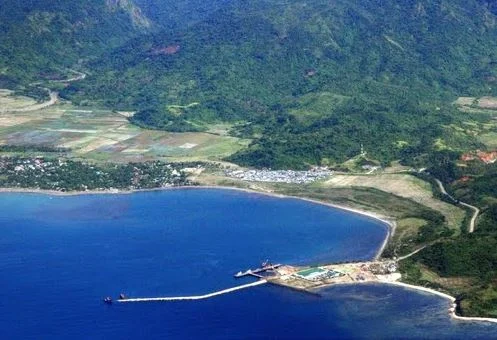
Port Irene
The gateway to Palaui Island and the easternmost point of Luzon. A deep-water port with sweeping Pacific Ocean views, fishing villages, and spectacular sunrises over the island.
Explore Guide →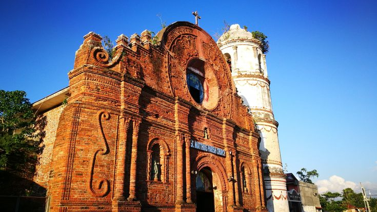
Tumauini Church
A 17th-century Baroque church adorned with unique terracotta tile decorations unlike any other in the Philippines. On the UNESCO Tentative List and one of Isabela’s most distinctive heritage landmarks.
Explore Guide →
Magat Dam
One of the largest dams in the Philippines — a 114-meter engineering marvel spanning the Magat River. Walk the 1,140-meter crest for sweeping views of the vast reservoir and the Cagayan Valley.
Explore Guide →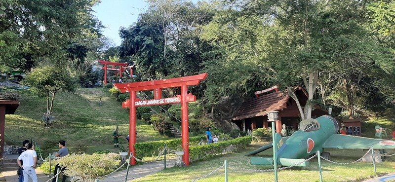
Ilagan Japanese Tunnel
A World War II underground complex built by Japanese forces during the 1942–1945 occupation of Isabela. A sobering historical site with guided tours and wartime exhibits in Ilagan City.
Explore Guide →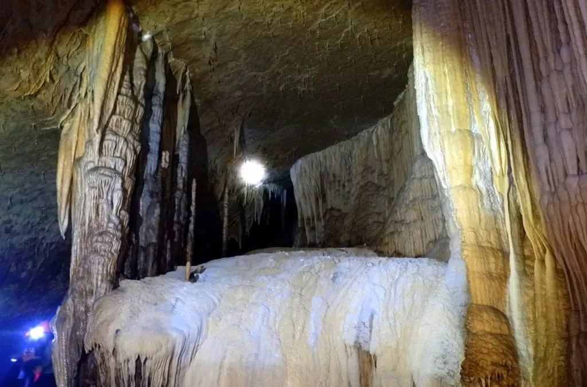
Capisaan Cave System
One of the longest cave systems in Luzon — 8km+ of explored passages, underground rivers, and dramatic limestone formations hidden beneath the Caraballo Mountains of Kasibu.
Explore Guide →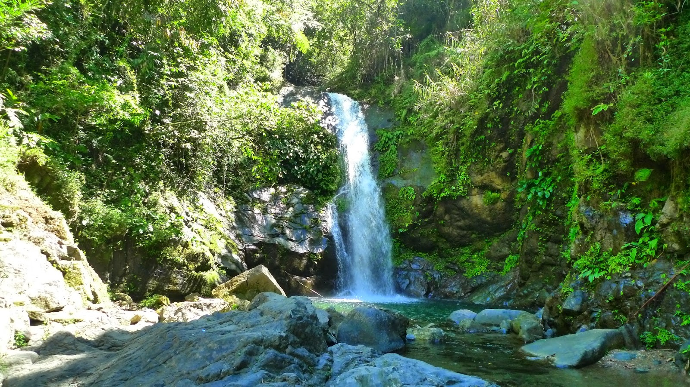
Imugan Falls
A breathtaking multi-tiered waterfall hidden in the mountains of Santa Fe — crystal-clear natural pools, lush jungle, and a trek through indigenous Ibaloi and Kalanguya community land.
Explore Guide →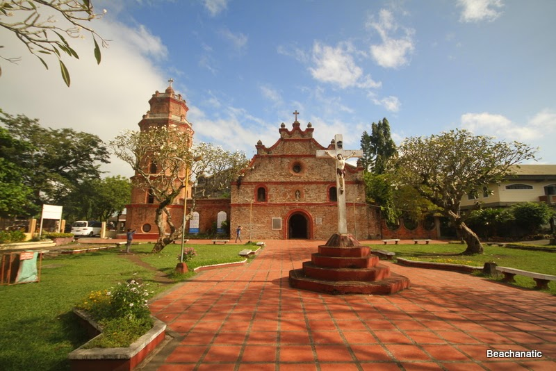
St. Dominic Cathedral
The Diocese Cathedral of Bayombong — founded by Dominican missionaries in 1739 and the spiritual heart of Nueva Vizcaya’s highland capital. A beautiful colonial church on the town plaza.
Explore Guide →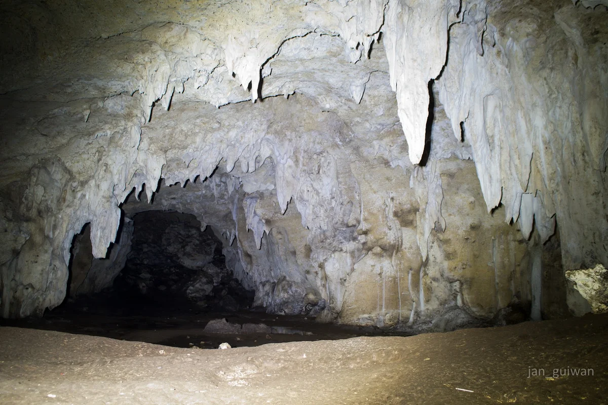
Aglipay Caves National Park
A protected cave network in the Sierra Madre foothills with dramatic limestone formations, bat colonies, and pristine national park forest. Watch thousands of bats emerge at dusk.
Explore Guide →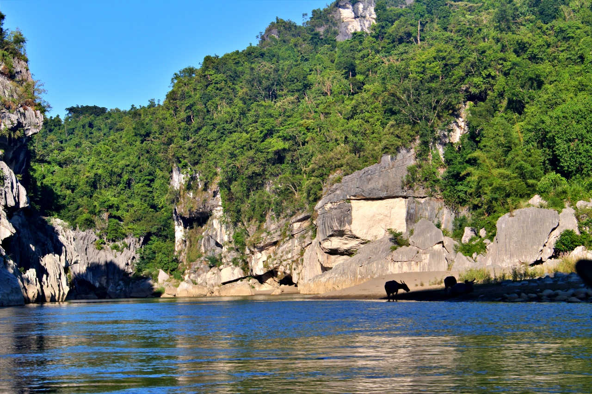
Governor Rapids
Dramatic rapids on the Cagayan River — the longest river in the Philippines. Natural swimming holes, kayaking, river tubing, and forested riverbanks in the heart of Quirino province.
Explore Guide →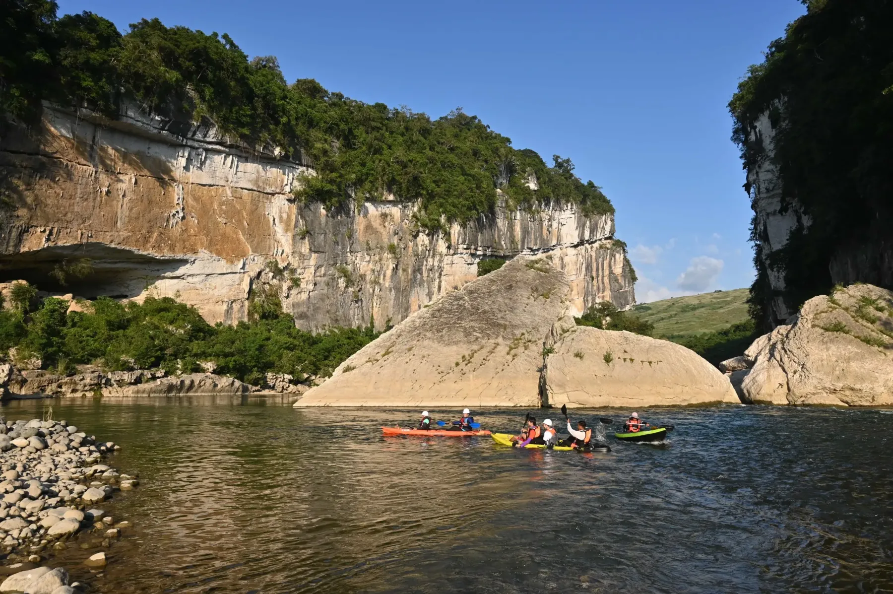
Siitan Nature's Park
A serene community ecotourism park along the Siitan River — crystal-clear swimming holes, Sierra Madre forest walks, and the peaceful sounds of the wilderness. The perfect Quirino finale.
Explore Guide →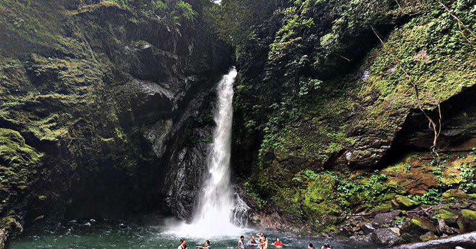
Ditumabo Mother Falls
A towering 70-meter waterfall hidden deep in the Sierra Madre rainforest — reached by a thrilling river trek through crystal-clear mountain water. One of the most spectacular waterfalls in Luzon.
Explore Guide →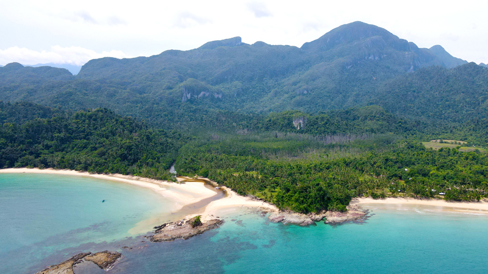
Sabang Beach
The birthplace of Philippine surfing in Baler, Aurora. A long, wild Pacific-facing beach with year-round waves, surf schools, and the dramatic Sierra Madre mountains as a backdrop.
Explore Guide →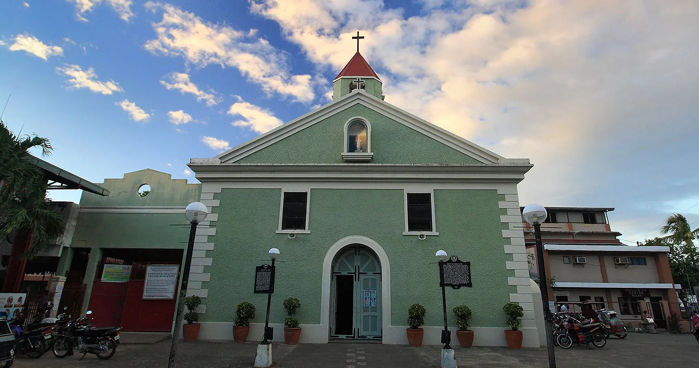
Baler Church
Site of the legendary 1898 Siege of Baler — where 57 Spanish soldiers held out for 337 days. Founded in 1735, this colonial church is one of the most historically charged sites in the Philippines.
Explore Guide →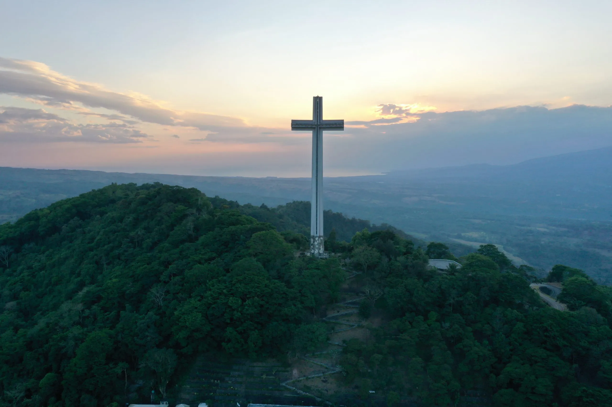
Mount Samat National Shrine
A 92-meter cross atop a mountain overlooking the 1942 Battle of Bataan battlefield. The Philippines' most solemn WWII memorial with a diorama museum, memorial wall, and panoramic views of Manila Bay.
Explore Guide →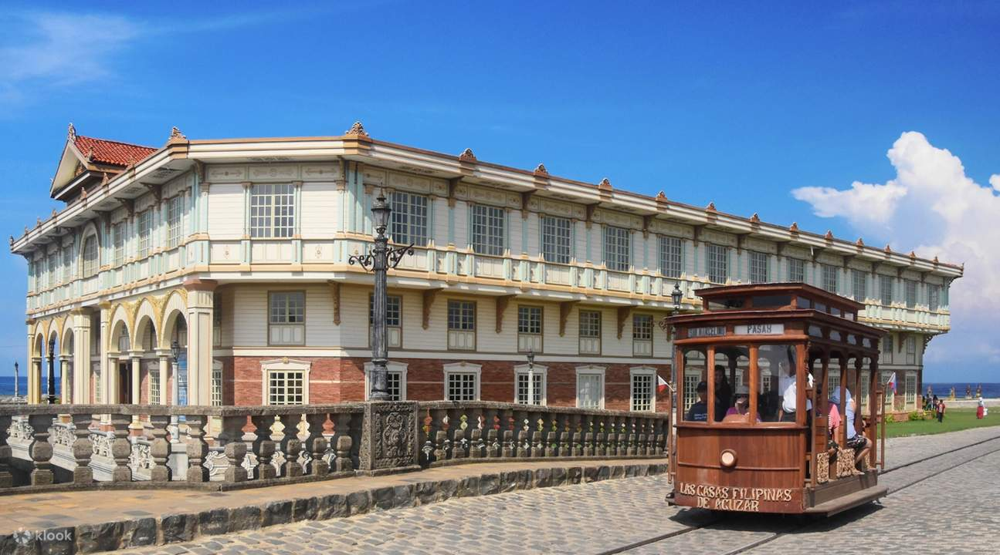
Las Casas Filipinas de Acuzar
A beachfront heritage resort where 25+ authentic Spanish colonial houses from across the Philippines have been restored and reassembled — a living museum of 300 years of Philippine architectural history.
Explore Guide →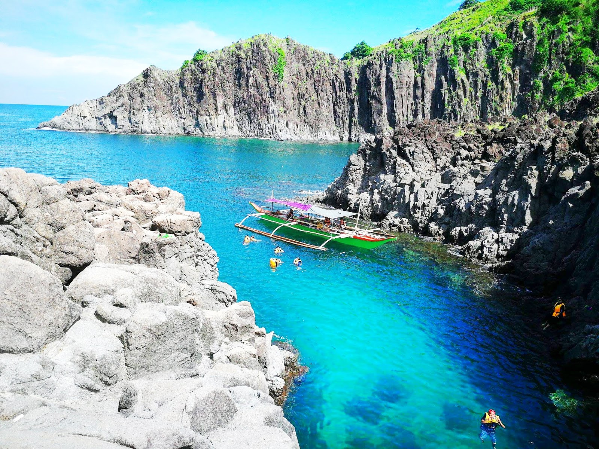
Five Fingers Cove
Five dramatic rocky peninsulas jutting into the South China Sea in Morong, Bataan — hidden coves, crystal-clear swimming holes, and a hilltop viewpoint with one of the most striking coastal formations in Luzon.
Explore Guide →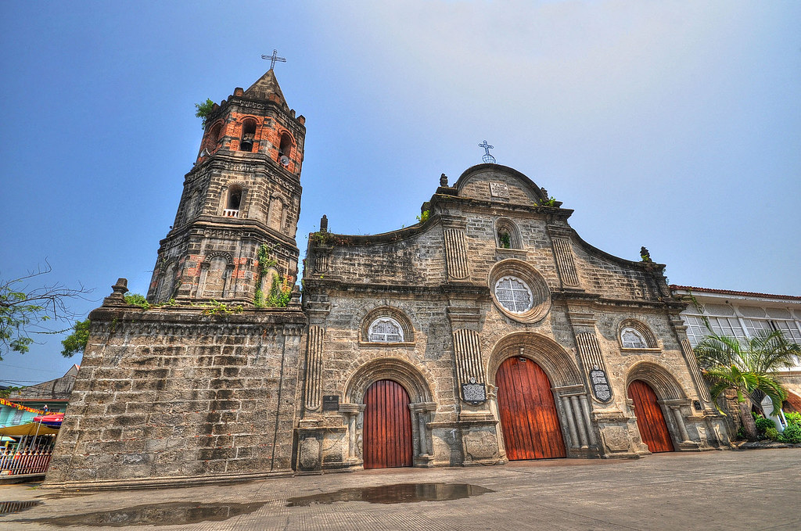
Barasoain Church
The birthplace of Philippine democracy — where the Malolos Congress convened in 1898 to ratify the first democratic constitution in Asia and establish the First Philippine Republic.
Explore Guide →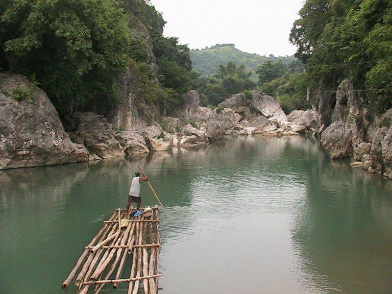
Biak-na-Bato National Park
Aguinaldo's 1897 revolutionary mountain headquarters — a national park of limestone caves, the crystal-clear Madlum River, and dense forest where history and nature are perfectly intertwined.
Explore Guide →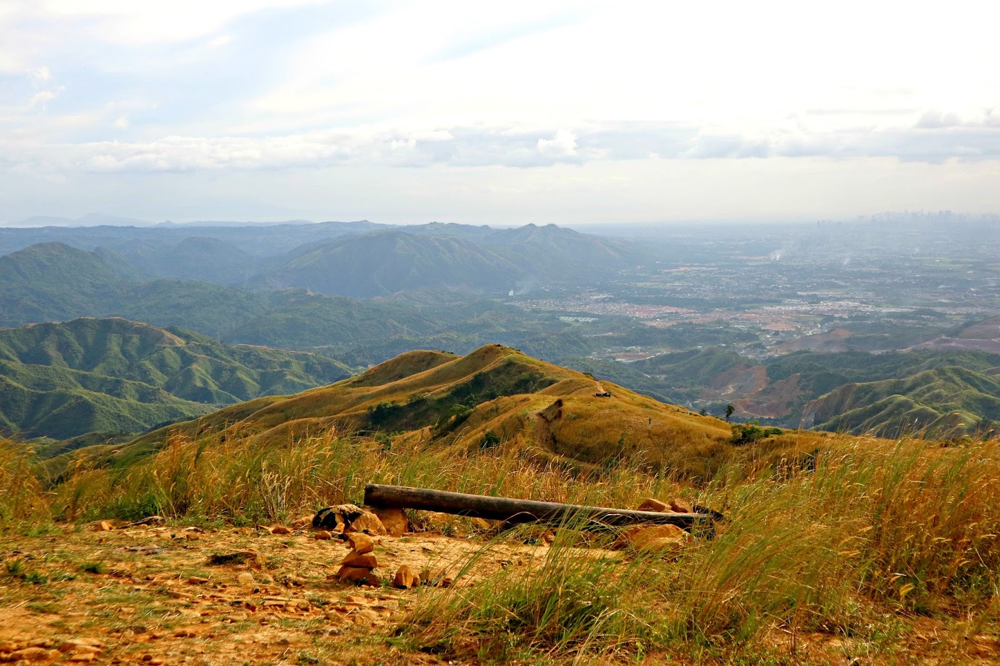
Mount Balagbag
Manila's closest mountain escape — a 1,110m beginner-friendly hike through Sierra Madre pine forest to a summit with sweeping views of Metro Manila, the Marikina Valley, and the mountains beyond.
Explore Guide →
Minalungao National Park
Towering limestone cliffs rising from the crystal-clear Penaranda River — boat tours through the gorge, natural swimming holes, cliff jumping, and cave exploration in General Tinio.
Explore Guide →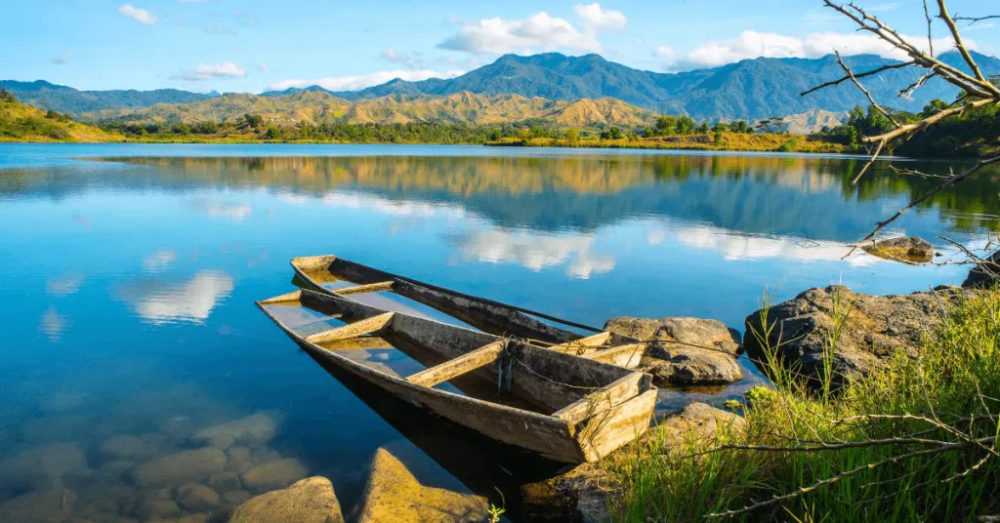
Pantabangan Dam
The largest reservoir in Luzon — a vast mountain lake with a haunting secret: a submerged town below the surface, its old church spire emerging from the water during dry season.
Explore Guide →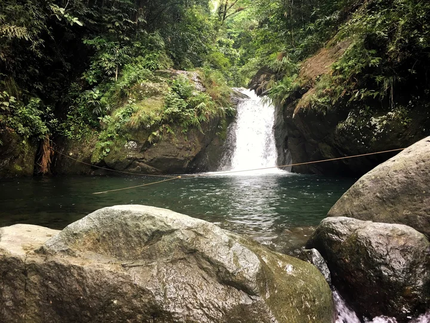
Gabaldon Falls
A multi-tiered waterfall hidden in the Sierra Madre foothills — crystal-clear natural pools, a lush forest trek, and the perfect refreshing finale to a full Nueva Ecija adventure day.
Explore Guide →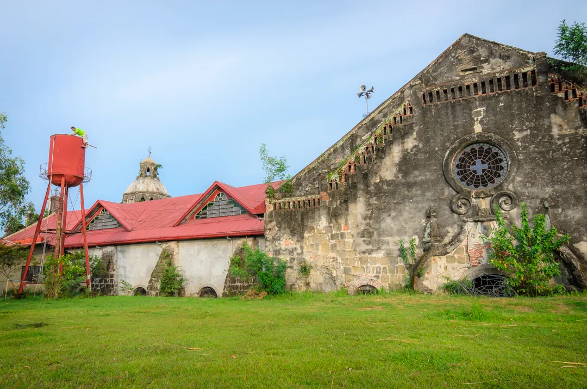
Bacolor Sunken Church
A 16th-century Spanish colonial church buried to its roofline by 1991 Pinatubo lahar flows — still active as a parish, where the congregation enters through what were once the upper windows.
Explore Guide →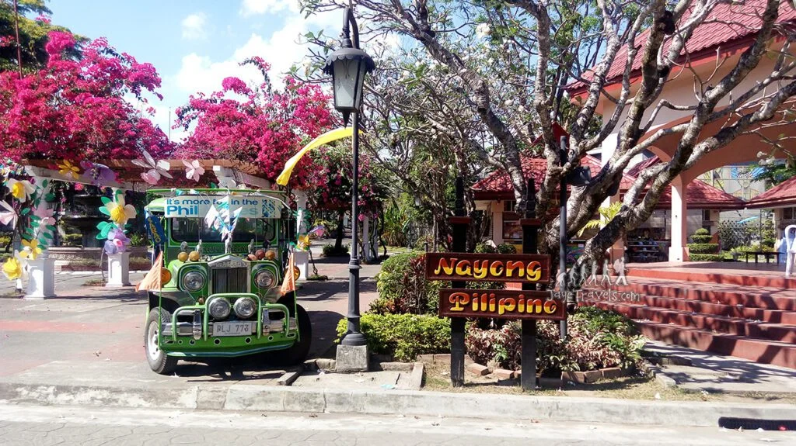
Nayong Pilipino Clark
A cultural theme park in Clark Freeport Zone showcasing miniature replicas of Philippine heritage sites from across the archipelago — Luzon, Visayas, and Mindanao in one place.
Explore Guide →
Capas National Shrine
The Philippines' most solemn WWII memorial — honoring the Filipino and American prisoners of war who suffered and died at Camp O'Donnell after the 1942 Bataan Death March.
Explore Guide →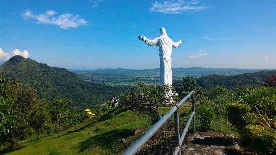
Monasterio de Tarlac
A hilltop Benedictine monastery home to a relic of the True Cross, a towering Risen Christ statue, the Stations of the Cross path, and panoramic views of the Tarlac countryside.
Explore Guide →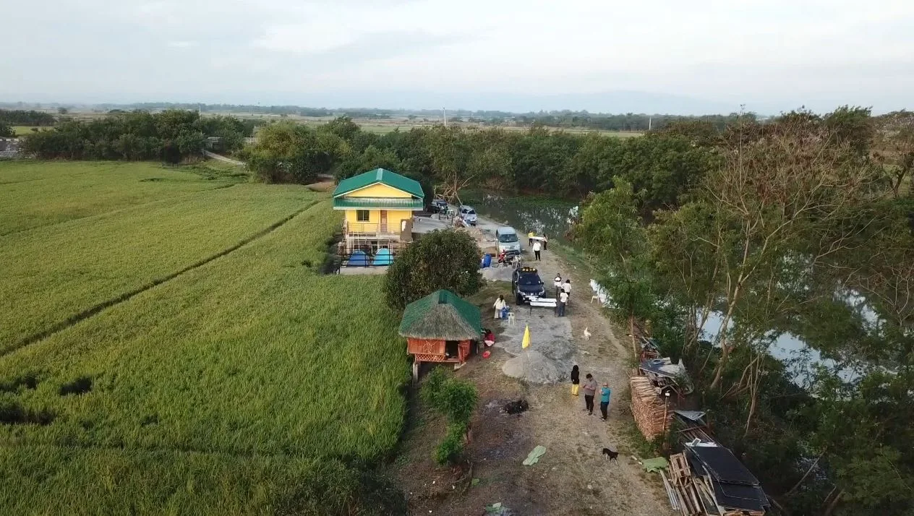
Sumino Farm
A charming agri-tourism destination in Tarlac — vegetable picking, farm animal feeding, nature walks, and farm-to-table dining in a scenic countryside setting. Perfect for families.
Explore Guide →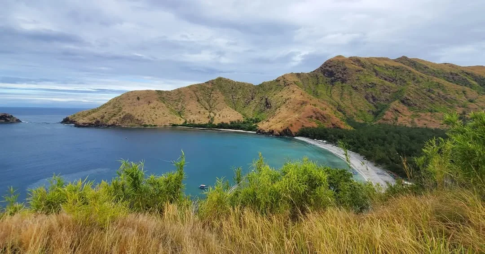
Anawangin Cove
Grey volcanic sand backed by Agoho pine trees — accessible only by boat, perfect for overnight camping, and offering some of the most atmospheric sunsets near Manila.
Explore Guide →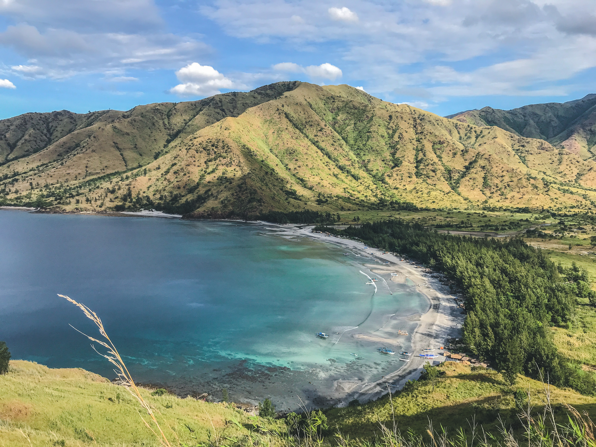
Nagsasa Cove
Anawangin's quieter, larger neighbour — a wide grey sand beach with a hidden freshwater lagoon, fewer visitors, and an even more secluded camping experience.
Explore Guide →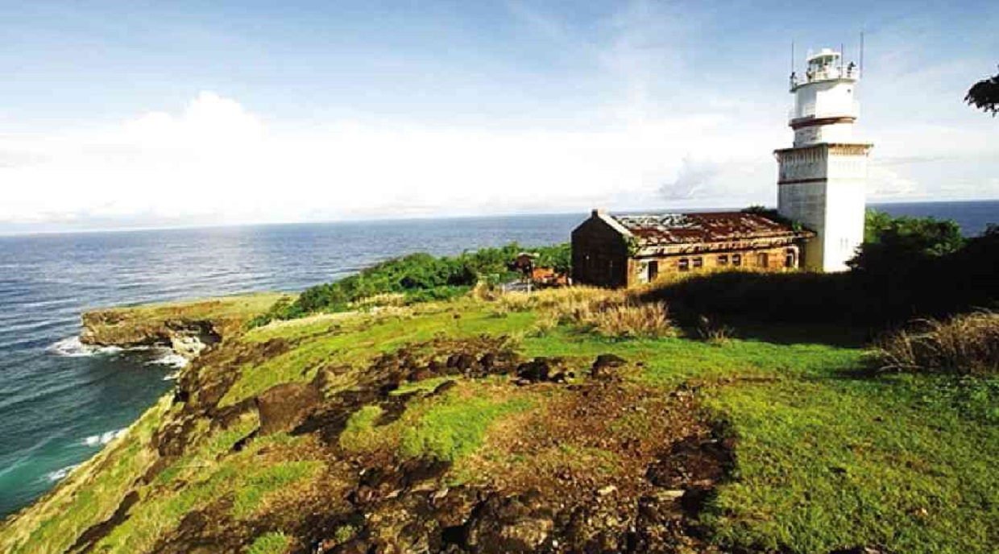
Capones Island Lighthouse
A Spanish colonial lighthouse built in 1890 on a jungle island — reached by boat and a 30-minute trek, rewarding visitors with 360° panoramic views of the Zambales coastline.
Explore Guide →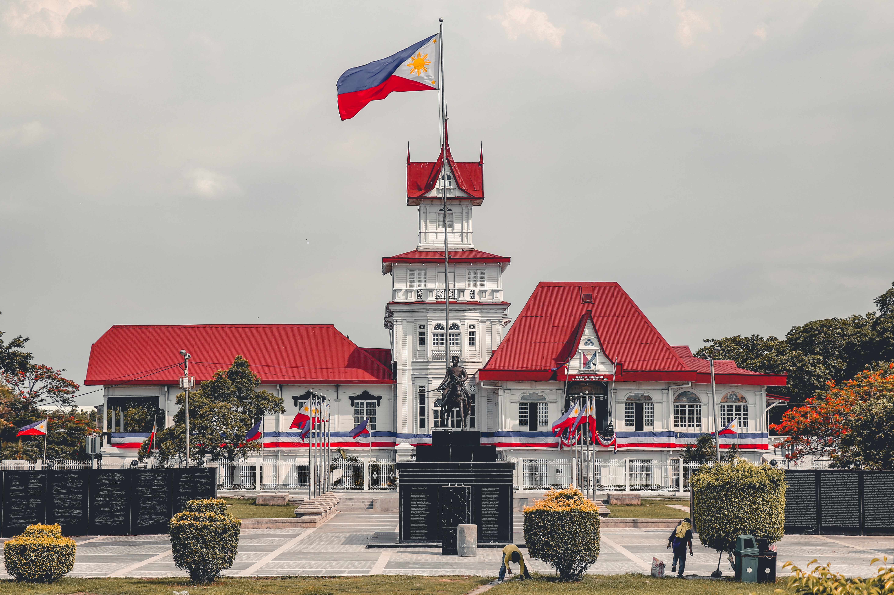
Aguinaldo Shrine
The ancestral home of Gen. Emilio Aguinaldo and the site where Philippine Independence was proclaimed on June 12, 1898 — the birthplace of the first republic in Asia.
Explore Guide →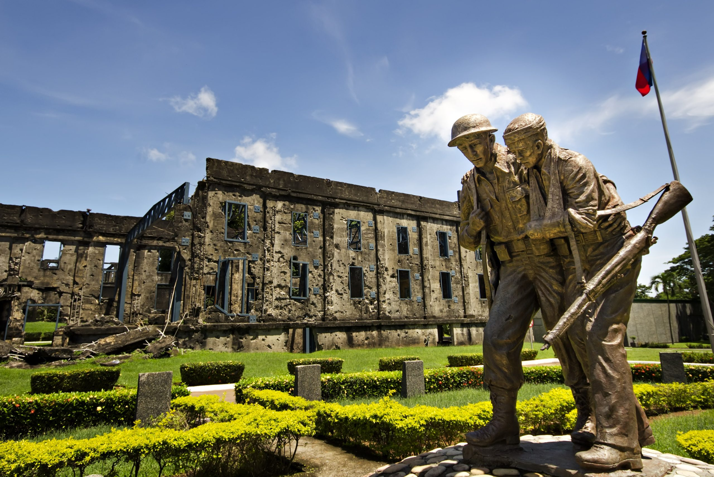
Corregidor Island
The WWII fortress island at the mouth of Manila Bay — Malinta Tunnel, the Pacific War Memorial, and dramatic ruins where Filipino and American forces made their last stand in 1942.
Explore Guide →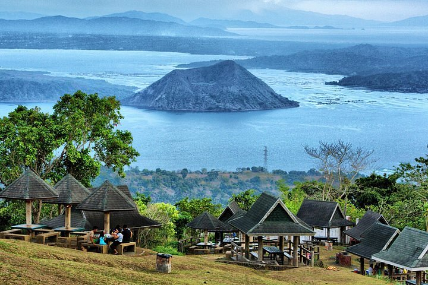
Tagaytay Ridge
Manila's most beloved highland escape — the iconic panorama of Taal Volcano rising from Taal Lake, cool mountain air, world-class bulalo, and fresh strawberries just 1 hour from the capital.
Explore Guide →
Pagsanjan Falls
The Philippines' most thrilling waterfall — a 2-hour bamboo banca ride through a dramatic gorge of 14 shooting rapids, culminating in a thundering 100-foot cascade and a daring plunge under the falls.
Explore Guide →
Rizal Shrine (Calamba)
The ancestral home and birthplace of Dr. José Rizal — the Philippines' national hero, born here on June 19, 1861. A National Cultural Treasure and one of the most important heritage sites in the country.
Explore Guide →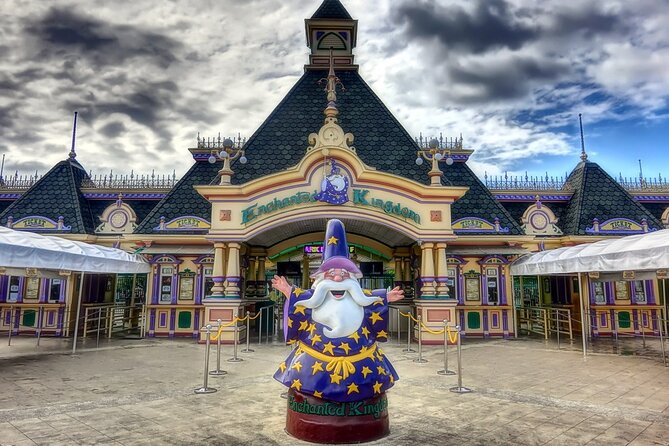
Enchanted Kingdom
The Philippines' premier theme park in Santa Rosa — 7 themed zones, 25+ rides including the Space Shuttle roller coaster, and the legendary EKstravaganza fireworks show. A Filipino institution since 1995.
Explore Guide →
Taal Volcano
A volcano inside a lake inside a volcano — one of the world's most extraordinary geological phenomena. Hike to the crater rim, stare into the vivid acid crater lake, and stand at the center of one of the most dramatic landscapes in Southeast Asia.
Explore Guide →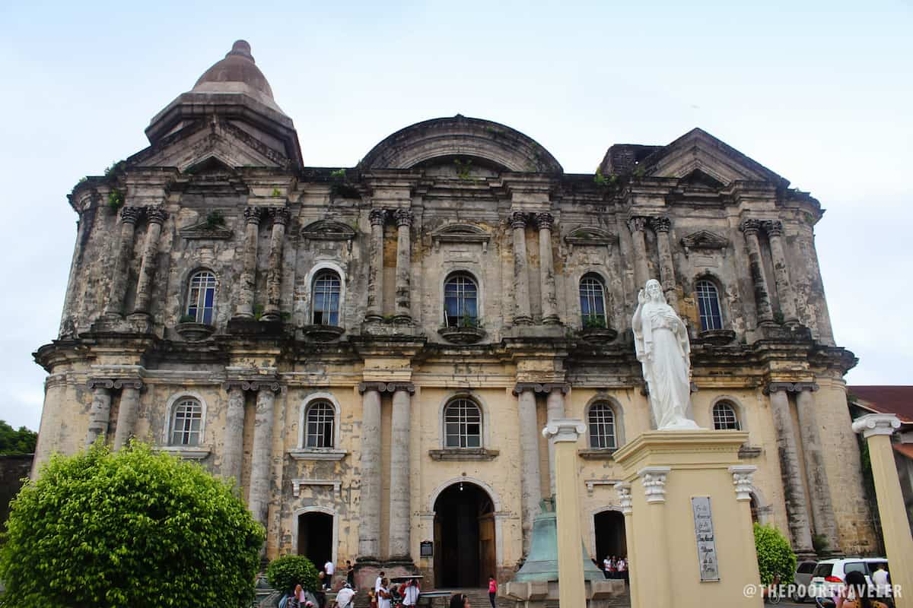
Taal Basilica
The largest Catholic church in Asia — the Basilica of Saint Martin de Tours, built 1755–1865. Climb 144 steps to the magnificent coral-stone facade, then explore the heritage town of Taal with its balisong workshops and ancestral houses.
Explore Guide →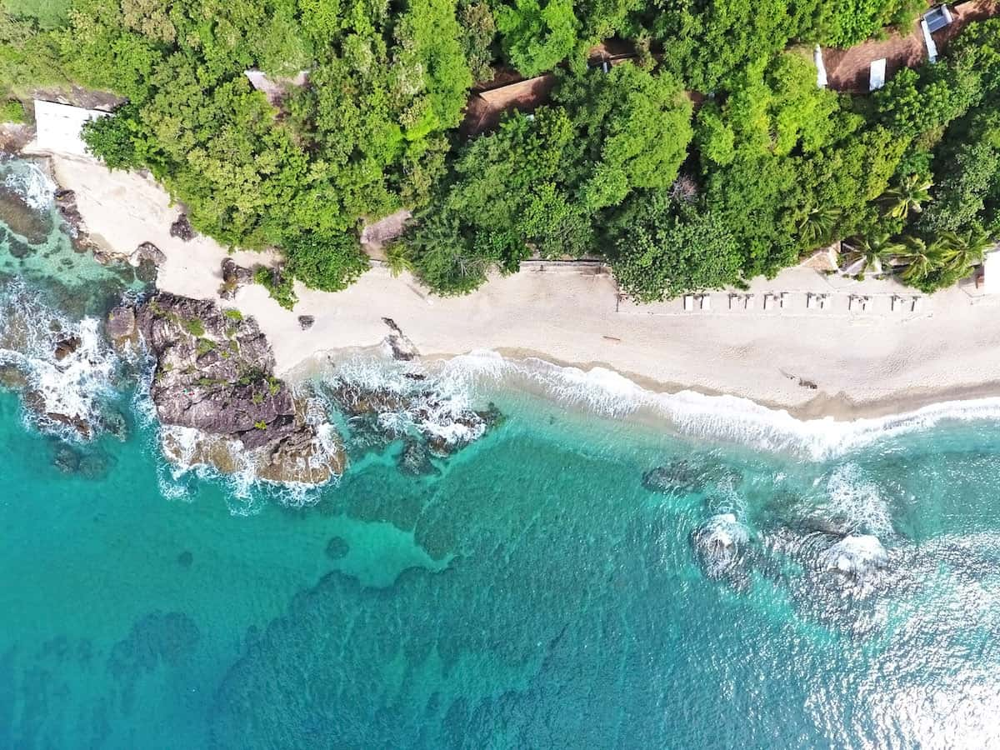
Laiya Beach
Manila's nearest white sand paradise — fine white sand, crystal-clear turquoise water, vibrant coral reefs, and a string of beach resorts in San Juan, Batangas. Just 3 hours from the capital and the default beach escape for millions of Manila residents.
Explore Guide →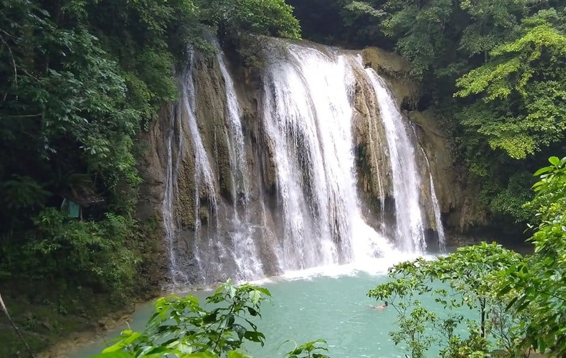
Daranak Falls
Manila's closest waterfall escape — a stunning 15-meter cascade into a wide crystal-clear natural pool in Tanay, Rizal. Combine with Batlag Falls upstream and Masungi Georeserve for the ultimate Rizal nature day.
Explore Guide →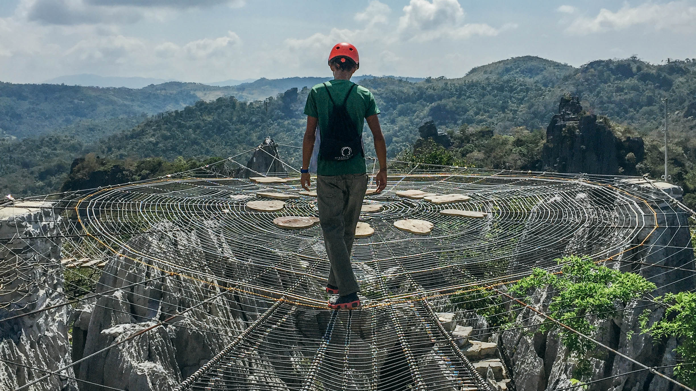
Masungi Georeserve
The Philippines' most extraordinary conservation experience — dramatic limestone karst formations, hanging bridges, rope ladders, and the iconic Sapot net hammock suspended over the Sierra Madre canopy. Book weeks in advance.
Explore Guide →Hinulugang Taktak
Antipolo's beloved waterfall — a cultural landmark immortalized in the Filipino folk song “Sa Ugoy ng Duyan,” set within a national park just 30 minutes from Manila. Combine with the Antipolo Cathedral and hilltop restaurants.
Explore Guide →Villa Escudero Plantations
The Philippines' most unique dining experience — eat Filipino buffet with your feet in the cool river water at the base of the Labasin Waterfall. An 800-hectare coconut plantation resort with carabao cart rides, bamboo rafting, and a world-class folk arts museum.
Explore Guide →Kamay ni Hesus Shrine
Quezon's most sacred pilgrimage site — a hilltop shrine in Lucban with 305 life-size Stations of the Cross, a 50-foot Risen Christ statue, and the famous healing ministry of Fr. Joey Faller. Combine with the Pahiyas Festival and longganisang Lucban.
Explore Guide →Alabat Island
Quezon's hidden island gem — a quiet ferry-access island in Quezon Bay with white sand beaches, mangrove forests, coconut plantations, and fishing communities. The kind of unspoiled island escape that is increasingly rare near Manila.
Explore Guide →Apo Reef Natural Park
The world's second largest contiguous coral reef — 34 km² of pristine reef with 500+ fish species, dramatic wall dives, whale sharks, and 30m+ visibility in the Sulu Sea. A UNESCO World Heritage Site candidate and the Philippines' greatest marine treasure.
Explore Guide →Pandan Island Dive Resort
A pristine eco-resort island off San Jose with 20+ world-class dive sites, 30m+ visibility, and no day-trippers. The closest resort to Apo Reef — the ultimate Occidental Mindoro diving base.
Explore Guide →Mount Iglit–Baco National Park
The last stronghold of the Tamaraw — a critically endangered dwarf buffalo found only on Mindoro, with fewer than 600 left on Earth. A UNESCO World Heritage Site and one of the most important wildlife conservation areas in Southeast Asia.
Explore Guide →White Beach Puerto Galera
Manila's most beloved island escape — fine white sand, crystal-clear water, and world-class diving in a UNESCO Biosphere Reserve. Just 3 hours from Manila by bus and ferry, with 40+ dive sites and a vibrant beach scene.
Explore Guide →Tamaraw Falls
Mindoro's most iconic waterfall — a powerful 30-meter cascade named after the endemic Tamaraw buffalo, just 15 km from White Beach. The perfect half-day escape from Puerto Galera, best reached by motorbike through beautiful Mindoro countryside.
Explore Guide →Mount Malasimbo
A scenic mountain above Puerto Galera Bay with panoramic views of the Verde Island Passage — and home to the Malasimbo Music and Arts Festival, one of the most celebrated outdoor music events in the Philippines, held every March.
Explore Guide →Immaculate Conception Cathedral
A fortress-church perched on a rocky hill above the Boac River — seat of the Diocese of Boac and the spiritual heart of the Moriones Festival, one of Asia's most unique Holy Week celebrations.
Explore Guide →
Maniwaya Island
Marinduque's hidden paradise — powdery white sand, crystal-clear turquoise water, and vibrant coral reefs. Part of the Three Islands group in Santa Cruz, far from the crowds of more famous Philippine beach destinations.
Explore Guide →Bathala Caves
Seven interconnected sacred caverns in Torrijos named after the ancient Filipino deity Bathala — stalactites, underground streams, thousands of bats, and a dramatic dusk exodus that has to be seen to be believed.
Explore Guide →Bonbon Beach
Romblon's iconic sandbar — a curving strip of white sand that stretches into the turquoise sea at low tide, flanked by rocky headlands and coconut palms. One of the most photographed beaches in MIMAROPA.
Explore Guide →Romblon Marble Quarries
The Marble Capital of the Philippines — 400+ years of quarrying world-class stone. Visit active quarries, watch master craftsmen carve statues and tiles, and bring home a unique piece of Romblon marble.
Explore Guide →Cresta de Gallo Island
An uninhabited island in the Sibuyan Sea — blinding white sand, impossibly clear water, and pristine coral reefs with sea turtles and reef sharks. One of the most remote and beautiful islands in the Philippines.
Explore Guide →Puerto Princesa Underground River
An 8.2km navigable underground river flowing through a UNESCO World Heritage cave system directly into the sea — one of the New Seven Wonders of Nature and the Philippines' most extraordinary natural landmark.
Explore Guide →El Nido Lagoons
Secret emerald lagoons enclosed by towering limestone karst cliffs in the Bacuit Archipelago — accessible only by swimming through a crack in the rock or kayaking through a hidden passage. Among the most beautiful places on earth.
Explore Guide →
Coron Shipwrecks
Twelve Japanese WWII warships sunk in a single 1944 air raid, now resting on the seafloor of Coron Bay as spectacular coral-encrusted artificial reefs — consistently ranked among the world's best wreck diving destinations.
Explore Guide →Cagsawa Ruins
The haunting bell tower of an 18th-century church buried by Mayon's catastrophic 1814 eruption — one of the Philippines' most iconic images, with the world's most perfect volcanic cone rising behind the ruins.
Explore Guide →Daraga Church
A stunning Baroque church built in 1773 from Mayon's own volcanic stone, perched on a hill with Mayon's perfect cone rising dramatically behind its ornate facade — one of the most photographed church views in the Philippines.
Explore Guide →Mayon Skyline View Deck
The closest road-accessible viewpoint to Mayon Volcano — a hilltop platform in Legazpi City where the 2,463m perfect cone fills the entire sky, with the Albay Gulf stretching out below.
Explore Guide →Calaguas Islands
One of the Philippines' last undiscovered paradises — over a kilometer of pristine white sand with no electricity, no resorts, and no crowds. Camping only, accessible by a 2–3 hour bangka crossing from Daet.
Explore Guide →Bagasbas Beach
Bicol's surfing capital — a long, wild Pacific-facing beach in Daet with consistent year-round waves, affordable surf schools, and a laid-back atmosphere. The perfect base for a Calaguas Islands adventure.
Explore Guide →Parroquia de San Juan Bautista
Daet Cathedral — the seat of the Diocese of Daet, founded in 1578 by Augustinian missionaries. The spiritual and historical heart of Camarines Norte's capital, standing at the center of the Daet town plaza.
Explore Guide →Caramoan Islands
Dramatic limestone karst islands rising from the Pacific — pristine beaches, hidden lagoons, and towering cliffs that have served as the backdrop for multiple international Survivor series.
Explore Guide →CamSur Watersports Complex
Asia's largest cable wakeboard park in Pili — a world-class facility that has hosted international competitions and introduced thousands of Filipinos to the thrill of wakeboarding.
Explore Guide →Naga Metropolitan Cathedral
Seat of the Archdiocese of Caceres and center of the Peñafrancia Festival — one of the largest Marian devotions in Asia, drawing millions of pilgrims to the Fluvial Procession every September.
Explore Guide →Donsol
The whale shark capital of the world — wild, natural butanding encounters in Donsol Bay from November to June, plus magical firefly watching on the Donsol River after dark.
Explore Guide →Lake Bulusan
A serene volcanic crater lake nestled inside Bulusan Volcano Natural Park — mirror-still water surrounded by old-growth rainforest, endemic birds, and rare orchids in the Cordillera foothills of Sorsogon.
Explore Guide →Subic Beach
A pristine white sand beach at the southernmost tip of Luzon in Matnog — crystal-clear turquoise water, vibrant coral reefs, and island hopping in the dramatic San Bernardino Strait.
Explore Guide →Kaparkan Falls
The Niagara of the Philippines — a breathtaking multi-tiered travertine waterfall in Tineg, Abra, with white limestone terraces and turquoise pools that rival the world’s most famous natural formations.
Explore Guide →Bangued Cathedral
The Saint John the Baptist Cathedral — seat of the Diocese of Bangued and spiritual heart of Abra province, standing at the center of the Bangued city plaza and the gateway to Kaparkan Falls.
Explore Guide →Tayum Church
One of the oldest churches in the Cordillera — a centuries-old Augustinian colonial church in Tayum, Abra, just 10 km from Bangued and a beautiful complement to the Abra heritage circuit.
Explore Guide →Puting Bato Falls
White Rock Falls — water cascading over brilliant white limestone into a crystal-clear turquoise pool in Luna, Apayao, set within the pristine wilderness of one of the Philippines’ most remote provinces.
Explore Guide →Apayao River
One of the Philippines’ last wild rivers — a pristine, undisturbed river system flowing through ancient Cordillera forests and indigenous Isneg communities, offering boat tours, swimming, and river trekking.
Explore Guide →Pudtol Hanging Bridge
A dramatic suspension bridge spanning the Apayao River gorge — a thrilling crossing with breathtaking views of the crystal-clear river far below and the surrounding Cordillera wilderness.
Explore Guide →Puraran Beach
Home of the legendary "Majestic" — one of the most powerful and consistent surf breaks in the Philippines. A remote, pristine Pacific-facing beach in Baras, Catanduanes that draws world-class surfers from across Asia.
Explore Guide →Binurong Point
Dramatic limestone cliffs plunging into the Pacific Ocean — a breathtaking headland viewpoint in Baras, Catanduanes where the island meets the open sea in one of the most stunning natural panoramas in the Philippines.
Explore Guide →Bato Church
A 17th-century Spanish colonial church built from volcanic stone in Bato, Catanduanes — designed to withstand the island's powerful typhoons and standing as one of the oldest landmarks in the Bicol Region.
Explore Guide →
Ticao Island
One of the Philippines' premier whale shark encounter destinations — the Ticao Pass is a feeding ground for butanding, manta rays, and thresher sharks, offering some of the most responsible and awe-inspiring marine wildlife encounters in Asia.
Explore Guide →Buntod Reef Marine Sanctuary
A protected coral reef just off Masbate City with healthy coral gardens, sea turtles, and a stunning white sandbar that emerges at low tide — one of the most accessible marine experiences in the Bicol Region.
Explore Guide →Masbate Cathedral
The Saint Anthony of Padua Parish — spiritual center of the Cattle Capital of the Philippines and host of the annual Rodeo Masbateño, the country's most unique festival celebrating its cattle-ranching heritage.
Explore Guide →Baguio City
The Summer Capital of the Philippines at 1,500m elevation — cool mountain air, pine forests, Burnham Park, Session Road, and the gateway to the Cordillera.
Explore Guide →La Trinidad Strawberry Farm
The strawberry capital of the Philippines — pick fresh strawberries directly from the hillside fields, just 15 minutes from Baguio City.
Explore Guide →
Mt. Pulag National Park
The highest peak in Luzon at 2,922m — trek before dawn to witness the legendary sea of clouds at sunrise above the dwarf bamboo grasslands.
Explore Guide →Batad Rice Terraces
A perfect natural amphitheater of 2,000-year-old stone-walled terraces — the most spectacular of the UNESCO World Heritage Ifugao terrace clusters.
Explore Guide →Hapao Rice Terraces
Ifugao's hidden terrace gem in Hungduan — a quieter UNESCO World Heritage cluster with a natural hot spring flowing through the ancient rice fields.
Explore Guide →Chico River
The sacred river of the Kalinga people — whitewater rafting through dramatic gorges, and the legendary site of the indigenous resistance that stopped a dam.
Explore Guide →Buscalan Village
Home of Whang-Od Oggay — the world's oldest mambabatok, still practicing traditional Kalinga hand-tapping tattoos at over 100 years old in this remote mountain village.
Explore Guide →Sleeping Beauty Mountain
A sacred Kalinga peak whose ridgeline resembles a reclining figure — panoramic views of the Cordillera highlands and the Chico River valley from the summit.
Explore Guide →
Hanging Coffins of Sagada
Ancient wooden coffins nailed to the limestone cliffs of Echo Valley — a 2,000-year-old Igorot burial tradition where the dead are placed high to watch over the living.
Explore Guide →
Sumaguing Cave
Sagada's underground cathedral — a massive limestone cavern with cathedral-like chambers, dramatic formations, an underground river, and a genuine caving adventure by kerosene lamplight.
Explore Guide →Bomod-ok Falls
The Big Falls of Sagada — a magnificent 200-foot waterfall reached by a 2-hour trek through Fidelisan rice terraces and pine forest, with a cold natural swimming pool at the base.
Explore Guide →Intramuros
The Walled City of Manila — a 16th-century Spanish colonial fortress of cobblestone streets, baroque churches, and 450 years of Philippine history at the mouth of the Pasig River.
Explore Guide →
Fort Santiago
A 16th-century citadel where José Rizal spent his last night before execution — the Rizal Shrine, the dungeons, and the bronze footprints marking his final walk to Bagumbayan.
Explore Guide →
Rizal Park
The national park of the Philippines — where Rizal was executed in 1896, where independence was proclaimed, and where the legendary Manila Bay sunset draws the whole city every evening.
Explore Guide →National Museum of the Philippines
Three world-class museums — free admission — housing Juan Luna's Spoliarium, the Tree of Life installation, and the 4,000-year-old Balangay boats. The finest museum complex in Southeast Asia.
Explore Guide →
Binondo
The world's oldest Chinatown, founded in 1594 — a labyrinth of food stalls, temples, gold shops, and 400 years of Chinese-Filipino culture. The most delicious neighborhood in Manila.
Explore Guide →Quiapo Church
Home of the Black Nazarene — the most venerated religious image in the Philippines. Every January 9, millions of barefoot devotees join the Traslacion procession in one of the world's largest religious gatherings.
Explore Guide →Escolta Street
Manila's original grand boulevard — once Southeast Asia's most glamorous commercial strip, now experiencing a creative renaissance with restored Art Deco buildings and the First United Building creative hub.
Explore Guide →Bonifacio Global City
The Philippines' most walkable modern district — a former US military base transformed into tree-lined boulevards, world-class dining, The Mind Museum, and the best street art in Southeast Asia.
Explore Guide →The Mind Museum
The Philippines' premier science museum in BGC — 250+ interactive exhibits across five galleries, a 3D Dome Theater, and the most engaging museum experience in Metro Manila. Book tickets in advance.
Explore Guide →SM Mall of Asia
One of the world's largest malls on the shores of Manila Bay — IMAX theater, ice rink, MOA Arena, and a legendary bayside promenade with some of the most spectacular sunset views in Metro Manila.
Explore Guide →Manila Baywalk
The iconic promenade along Roxas Boulevard where Manileños have gathered for generations — the legendary Manila Bay sunset, fresh buko vendors, and the heartbeat of the city's evening life.
Explore Guide →Cultural Center of the Philippines
The Philippines' premier arts institution on Manila Bay — home of the Philippine Philharmonic Orchestra, Ballet Philippines, and the finest performing arts venues in the country. A Brutalist masterpiece by Leandro Locsin.
Explore Guide →University of Santo Tomas
The oldest existing university in Asia, founded in 1611 — older than Harvard. The magnificent Main Building, the 17th-century Arch of the Centuries, and the UST Museum of Arts and Sciences.
Explore Guide →Paco Park
A circular 18th-century cemetery turned romantic garden — where Rizal was briefly buried after his execution, and where free Friday Concerts fill the historic walled garden with classical music at dusk.
Explore Guide →More Destinations
New travel guides are being added regularly. Stay tuned!